About
About ThorVG
Thor Vector Graphics (ThorVG) is an open-source, lightweight, and versatile vector graphics engine designed to deliver scalable graphics and rich animations across a wide range of devices.
The name “Thor” reflects a dual inspiration—combining great strength with lightning-fast speed—symbolizing the project’s commitment to powerful yet efficient rendering.
ThorVG was created in 2020 by Hermet Park as a fast, compact, and developer-friendly vector graphics engine for modern applications and systems. Since then, it has evolved into a globally adopted, community-driven project spanning mobile platforms, IoT devices, automotive systems, creative tools, and game engines.
Today, ThorVG continues to advance interactive Lottie capabilities, scalable vector graphics pipelines, and cross-platform rendering backends through a global network of contributors and industry adopters. It serves not merely as a graphics library, but as foundational infrastructure for modern motion-driven user experiences.
At its core, ThorVG offers a comprehensive set of vector primitives, including:
- Lines & Shapes - rectangles, circles, paths, and arbitrary vector geometry
- Filling - solid colors and linear & radial gradients
- Stroking - stroke width, joins, caps, dash patterns, and trimming
- Scene Management - retained-mode scene graph and hierarchical transformations
- Composition - W3C compositing and blending modes, masking, clipping, and nested scenes
- Text - Unicode, scalable TTF/OTF fonts, and multi-line text layout
- Images - SVG, PNG, JPEG, WebP, and raw bitmaps
- Effects - blur, drop shadow, tint, tritone, color replacement, and fill effects
- Animations - Lottie (JSON) playback and rendering
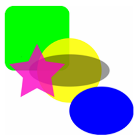
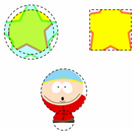
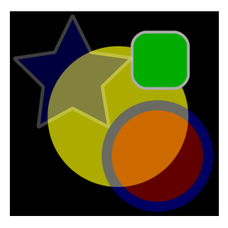
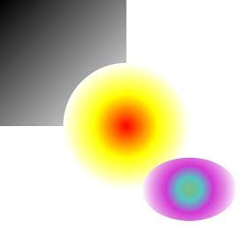
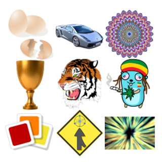
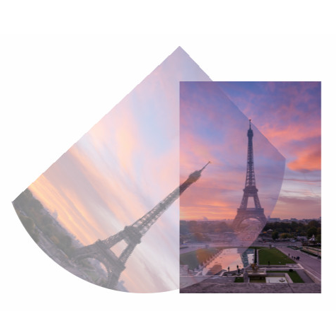
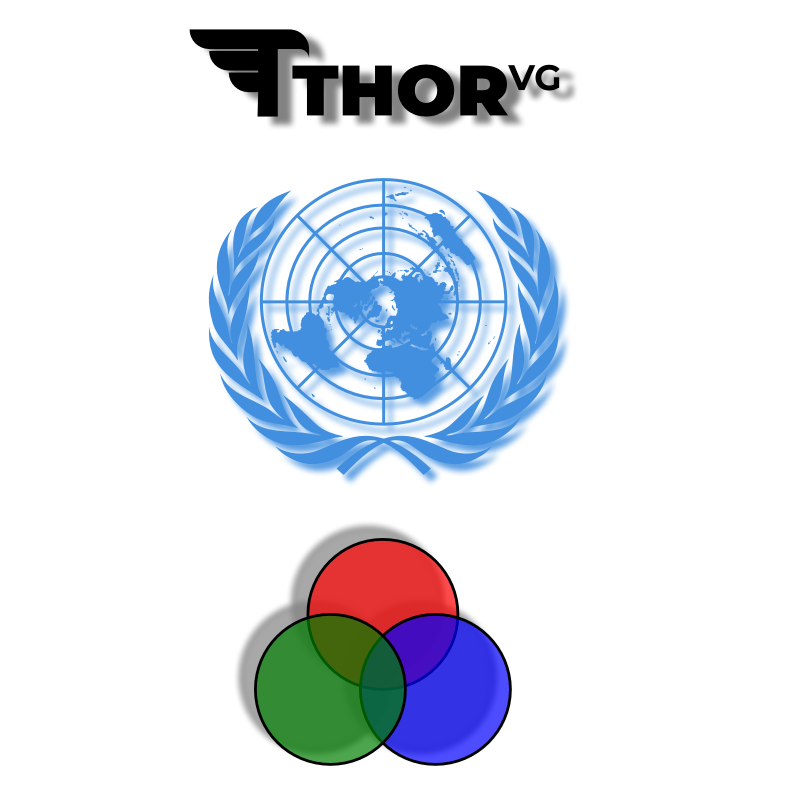
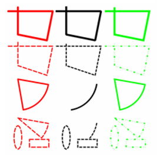
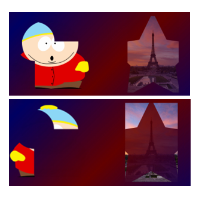
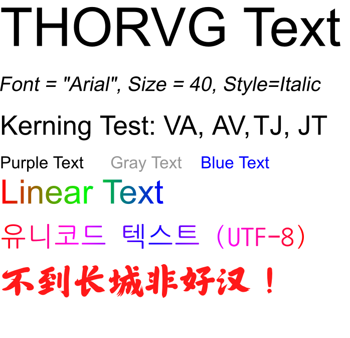
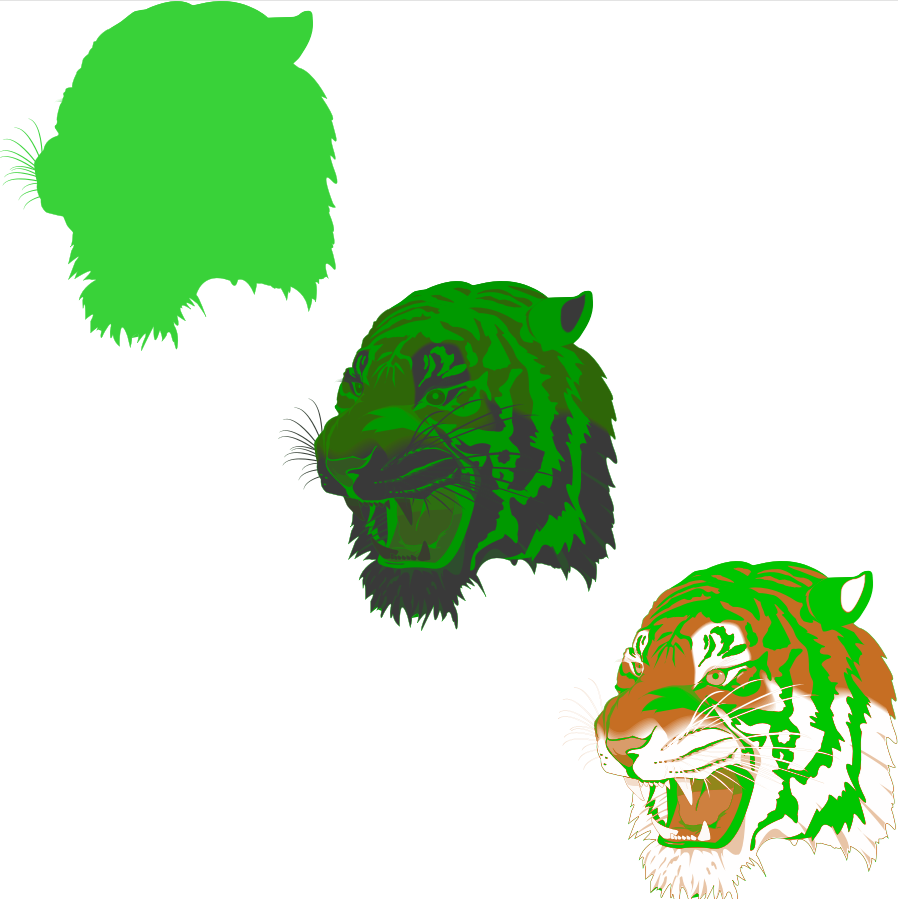
Design Principles
LightWeight Design
ThorVG is designed for a wide range of programs, offering adaptability for integration and use in various applications and systems. It achieves this through a single binary with selectively buildable, modular components in a building block style. This ensures both optimal size and easy maintenance.
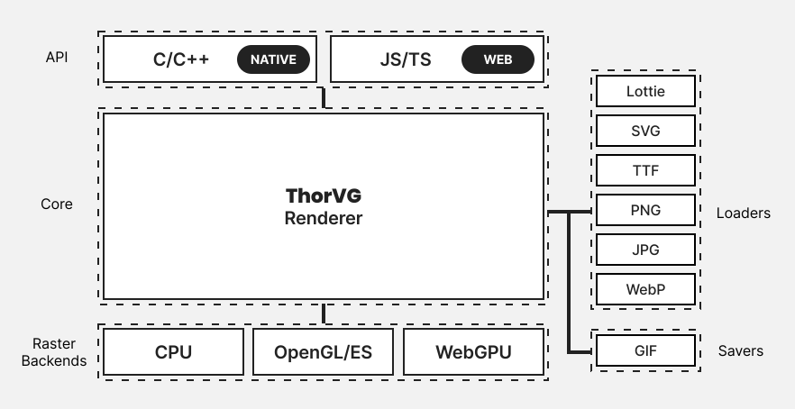
The core library of ThorVG maintains a binary size of approximately 170KB. This is significantly smaller compared to graphics engines designed primarily for desktop environments and offers the following advantages:
- Memory Efficiency - thanks to its low runtime memory usage, ThorVG operates stably even on low-spec systems
- Fast Boot - the library loads and initializes quickly, improving the overall startup speed of applications
- Low Size Deployment - with its small code and resource footprint, ThorVG is well-suited for embedded systems, IoT devices, and network-constrained environments
Broad Portability
ThorVG is based on the C++ standard and provides consistent functionality across various platforms through an abstraction layer that minimizes dependence on specific operating systems or hardware.
- Extensive Platform Support - ThorVG supports web platforms, desktop operating systems such as Windows, macOS, and Linux, mobile platforms including Android and iOS, as well as embedded systems like Tizen and RTOS-based environments
- Microcontroller Support - ThorVG has been shown to run on microcontrollers like the ESP32, demonstrating its efficiency even within environments with highly limited memory and storage
- Headless Rendering Support - ThorVG can perform rendering without a display server, enabling use cases such as server-side graphics processing or offline rendering tools
If your program includes the main renderer, you can seamlessly utilize ThorVG APIs by transitioning drawing contexts between the main renderer and ThorVG. Throughout these API calls, ThorVG effectively serializes drawing commands among volatile paint nodes. Subsequently, it undertakes synchronous or asynchronous rendering via its render-backend engines. Additionally, ThorVG is adept at handling vector images, including formats like SVG and Lottie, and it remains adaptable for accommodating additional popular formats as needed. In the rendering process, the library may generate intermediate frame buffers for scene compositing, though only when essential. The accompanying diagram provides a concise overview of how to effectively incorporate ThorVG within your system.
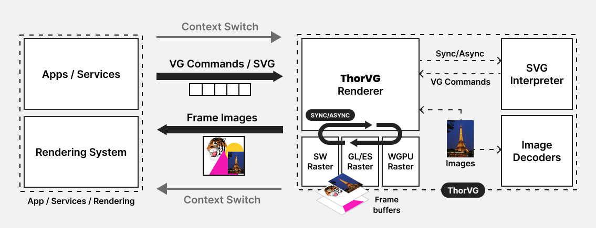
Rendering Engine
CPU Rasterization
ThorVG is optimized for CPU-based rasterization, with a strong focus on vector rendering in environments where GPU resources are limited, unavailable, or intentionally avoided. In representative CPU benchmarks, ThorVG demonstrates an average of ~2.9× faster performance to a widely-used vector graphics engine across common vector rendering workloads. The advantage is particularly clear in geometry-heavy scenarios such as rectangles, strokes, rotations, and circle rendering.
Performance Overview
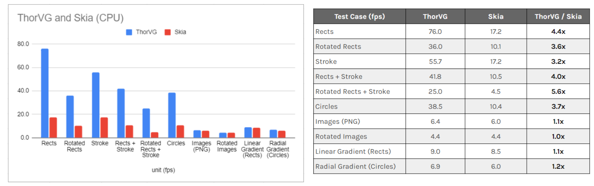
| Test Case (fps) | ThorVG | Skia | ThorVG / Skia |
|---|---|---|---|
| Rects | 76.0 | 17.2 | 4.4x |
| Rotated Rects | 36.0 | 10.1 | 3.6x |
| Stroke | 55.7 | 17.2 | 3.2x |
| Rects + Stroke | 41.8 | 10.5 | 4.0x |
| Rotated Rects + Stroke | 25.0 | 4.5 | 5.6x |
| Circles | 38.5 | 10.4 | 3.7x |
| Images (PNG) | 6.4 | 6.0 | 1.1x |
| Rotated Images | 4.4 | 4.4 | 1.0x |
| Linear Gradient (Rects) | 9.0 | 8.5 | 1.1x |
| Radial Gradient (Circles) | 6.9 | 6.0 | 1.2x |
Test Conditions:
- Tested with 5k semi-transparent primitives, including shapes, strokes, and images, using alpha blending.
- Image filtering was performed using bilinear interpolation.
- Test Platform: Apple M2 Pro (macOS 26)
- Render size: 2560 × 1440 (2K) for each test case
- Versions: ThorVG v1.1, Skia v148
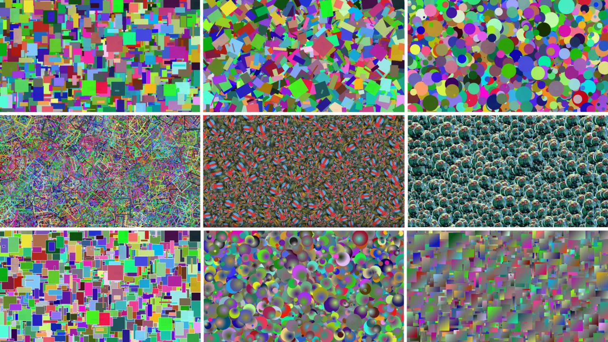
Threading
ThorVG incorporates a threading mechanism designed to seamlessly retrieve upcoming scenes without unnecessary delays. It utilizes a finely-tuned task scheduler based on thread pools to handle a variety of tasks, including encoding, decoding, updating, and rendering. This architecture ensures efficient use of multi-core processing.
The task scheduler is carefully designed to abstract complexity, simplify integration, and enhance user convenience. Its use is optional, allowing users to adopt it based on their specific needs.
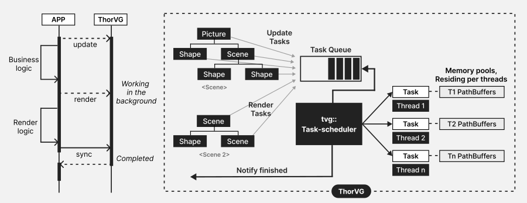
Smart Rendering
ThorVG supports smart partial rendering, which enables more efficient rendering workflows by updating only the portions of a vector scene that have changed. By internally tracking modified regions, it minimizes unnecessary redraws and optimizes overall performance. This feature provides significant benefits in scenarios such as UI rendering, design tools, or applications where large parts of the scene remain static and only small elements update between frames. In such cases, avoiding full-scene rendering can greatly reduce computational workload and improve energy efficiency—making it particularly valuable on mobile and embedded systems.
The following figure illustrates the geometry changes and highlights the minimal redraw region (outlined in red) that needs to be updated. Only the modified area between the previous and current frames is selectively redrawn, significantly improving performance.
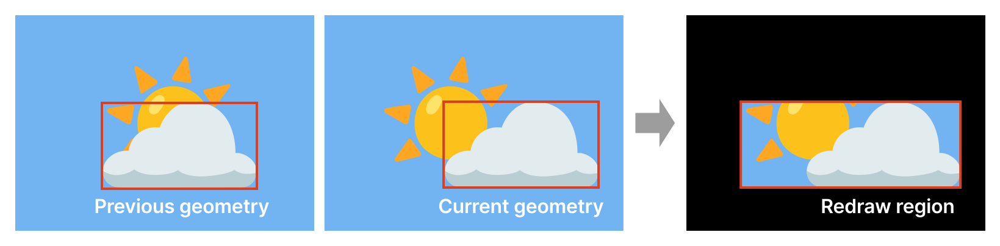
Please note that in highly dynamic content—such as fast-paced games or full-screen animations where nearly all objects change every frame—partial rendering provides little to no benefit and may even introduce minor overhead. In these scenarios, full-scene rendering is typically the better choice. For a practical showcase, visit this page demonstrating a performance comparison of partial rendering using ThorVG’s software renderer.
Render Backends
Today, ThorVG provides its own implementation of multiple rendering backends, allowing you to choose the one that best suits your application and target platform.
- CPU/SIMD (Software)
- OpenGL/ES
- WebGL
- WebGPU
ThorVG is particularly ahead of the curve in the web ecosystem. WebGPU introduces a next-generation graphics API comparable to Vulkan, providing low-overhead GPU access and modern graphics capabilities. This enables more aggressive optimization strategies while preserving feature parity with other ThorVG backends. All vector rendering features are fully supported on the WebGPU backend, ensuring a consistent rendering experience across platforms.
Beyond feature completeness, the WebGPU backend also delivers substantial performance improvements over the OpenGL backend in many rendering workloads. Internal benchmarks show an average of approximately 1.8× higher rendering throughput, with the largest gains reaching up to 2.7× in stroke rendering, gradients, and image rendering. Even for general vector rendering, WebGPU consistently maintains higher performance while producing identical visual output.
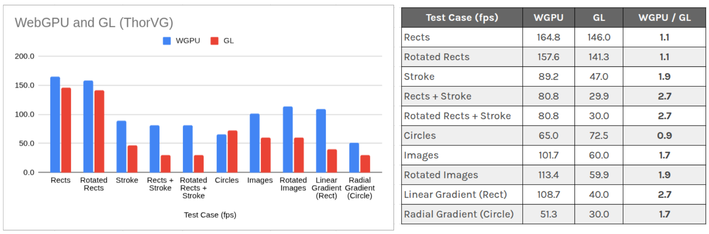
| Test Case (fps) | WGPU | GL | WGPU / GL |
|---|---|---|---|
| Rects | 164.8 | 146.0 | 1.1 |
| Rotated Rects | 157.6 | 141.3 | 1.1 |
| Stroke | 89.2 | 47.0 | 1.9 |
| Rects + Stroke | 80.8 | 29.9 | 2.7 |
| Rotated Rects + Stroke | 80.8 | 30.0 | 2.7 |
| Circles | 65.0 | 72.5 | 0.9 |
| Images | 101.7 | 60.0 | 1.7 |
| Rotated Images | 113.4 | 59.9 | 1.9 |
| Linear Gradient (Rect) | 108.7 | 40.0 | 2.7 |
| Radial Gradient (Circle) | 51.3 | 30.0 | 1.7 |
Benchmark results were obtained using ThorVG's benchmark application on a representative desktop system. Actual performance may vary depending on the hardware, operating system, graphics driver, and rendering workload.
Furthermore, by abstracting underlying hardware graphics APIs such as Metal, Vulkan, and DirectX, ThorVG guarantees seamless integration across a wide range of systems, regardless of the specific hardware accelerations available.
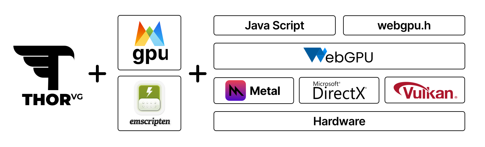
Platforms & Formats
Supported Platforms
ThorVG is designed to be portable across a wide range of devices, including small IoT devices, embedded systems, mobile platforms, desktop environments, and the web. It is actively under development, with ongoing efforts to expand support for essential platforms as needed. Currently, major supported platforms include:
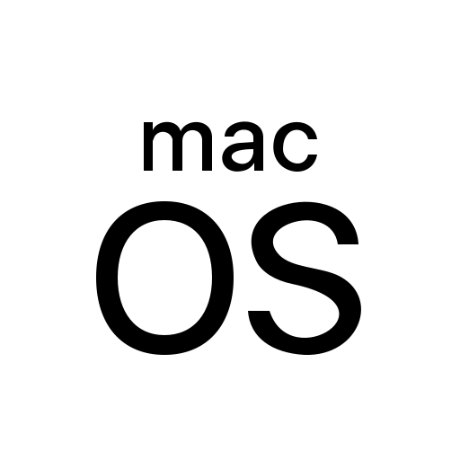
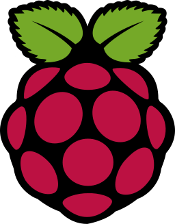
SVG
ThorVG facilitates SVG (Scalable Vector Graphics) rendering via its dedicated SVG interpreter. Adhering to the SVG Tiny Specification, the implementation maintains a lightweight profile, rendering it particularly advantageous for embedded systems. While ThorVG comprehensively adheres to most of the SVG Tiny specs, certain features remain unsupported within the current framework. These include:
- Animation
- Interactivity
- Multimedia
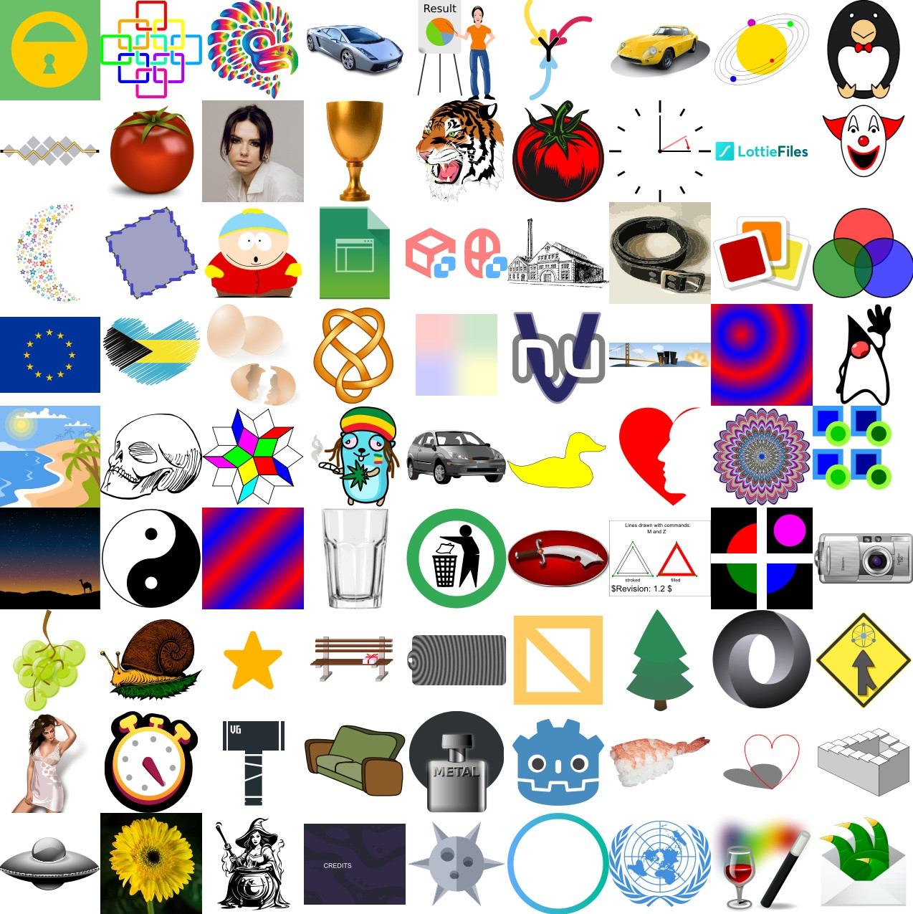
Lottie
ThorVG supports a wide range of Lottie Animation features. Lottie is an industry-standard, JSON-based vector animation file format that enables animations to be distributed seamlessly across platforms, much like static assets. Lottie files are compact, compatible with a wide range of devices, and can be scaled without pixelation. The format also makes it easy to create, edit, test, collaborate on, and distribute animations. For more information, visit the Lottie Animation Community website.
Please check out the ThorVG Test to see the performance of various Lottie Animations powered by ThorVG. For frontend development, you can also install the ThorVG Lottie Player npm package.
Expressions
ThorVG supports Lottie Expressions, enabling small JavaScript snippets to dynamically control animated properties. This unlocks advanced capabilities such as interactivity, dynamic theming, and context-aware animation behavior.
WebCanvas
ThorVG Web brings the ThorVG graphics engine to the web through a JavaScript and TypeScript programming interface. Powered by WebAssembly, it enables applications to construct, manipulate, animate, and render vector graphics directly in the browser using the same core rendering architecture as native ThorVG.
WebCanvas supports modern GPU-accelerated rendering through WebGL and WebGPU, while providing programmatic access to ThorVG's vector primitives, scene composition, effects, and animation capabilities. This makes it suitable for interactive graphics, animation runtimes, creative tools, and dynamic vector-based user interfaces on the web.
Developers can explore WebCanvas interactively through the ThorVG Playground or integrate it directly into web applications through the NPM package.
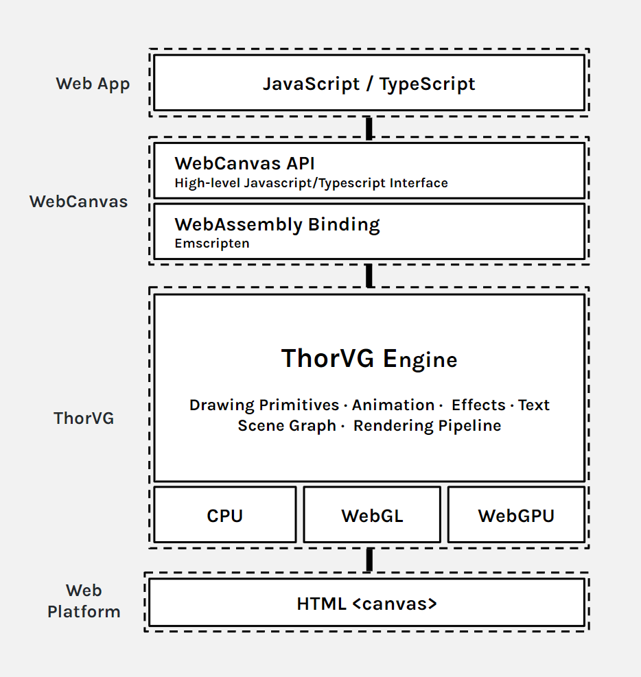
ThorVG View
ThorVG View is an interactive web tool for testing and validating vector and motion graphics assets with ThorVG. It provides a quick way to verify how standard formats such as SVG and Lottie are parsed, rendered, and animated by the engine.
Powered by ThorVG WebAssembly, assets are rendered directly in the browser with no server-side processing, making it useful for compatibility testing, visual inspection, debugging, and experimenting with asset behavior in real time.
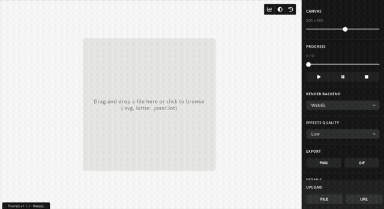
ThorVG also provides a Visual Studio Code extension that integrates ThorVG View for previewing Lottie animations and SVG files directly inside the editor.
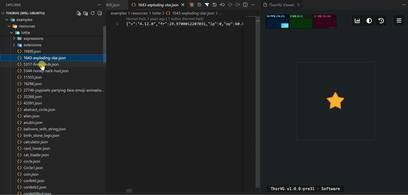
Community
References
Universal Motion Graphics across All Platforms: Unleashing Creativity with ThorVG
Contributors
Today, ThorVG stands as a purely open-source initiative. We are grateful to the individuals, organizations, and companies that have contributed to the development of the ThorVG project. The dedicated efforts of the individuals and entities listed below have enabled ThorVG to reach its current state.
Partners
Corporate partners collaborate with ThorVG through development, integration, and strategic initiatives that help advance the project. We also recognize past partners whose contributions have played an important role in ThorVG’s growth.

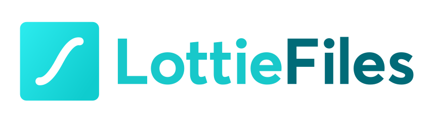
If you’re interested in partnering with ThorVG, we’d love to hear from you. Please reach out at thorvg@thorvg.org.
Sponsors
We sincerely thank all of our sponsors, past and present, whose financial support has helped shape the evolution of ThorVG. Your generosity is more than a contribution—it is an investment in a high-performance, accessible graphics engine built for real-world production.
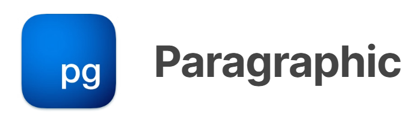
ThorVG is designed to remain open, accessible, and community-driven. To help ensure long-term sustainability and faster technical iteration, we provide additional support channels for our corporate and professional sponsors.